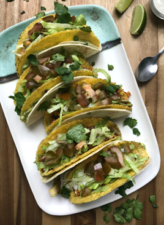

Recetas
Recetas
 Pollo
Pollo
 Pescado
Pescado
 Atun
Atun
 Veganas
Veganas
 Vegetarianas
Vegetarianas
 Quinoa
Quinoa

Tacos veganos de tempeh con salsa de aguacate
Tacos sabrosos de tempeh, un excelente sustituto de la carne, con una salsa cremosa de aguacate y cilantro.
Dificultad
Medio

Personas
4

TOTAL
30MIN
Ingredientes:
- 200 g de tempeh, desmenuzado
- 8 tortillas de maíz
- 1 aguacate maduro
- 1/4 taza de cilantro fresco
- Jugo de 1 limón
- 1 cucharada de aceite de oliva
- 1/2 cucharadita de comino
- 1/2 cucharadita de pimentón ahumado
- 1/2 cucharadita de chili en polvo
- Sal y pimienta al gusto
Información nutricional (aproximada por porción):
- Calorías: 400 kcal
- Proteínas: 18 g
- Grasas: 22 g
- Carbohidratos: 35 g
- Fibra: 9 g
A cocinar:
- Calienta el aceite en una sartén grande a fuego medio. Agrega el tempeh desmenuzado y sazona con comino, pimentón, chili, sal y pimienta.
- Cocina el tempeh durante 10 minutos, removiendo ocasionalmente, hasta que esté dorado y crujiente.
- Mientras tanto, en un tazón pequeño, mezcla el aguacate, cilantro, jugo de limón, sal y pimienta hasta obtener una salsa suave.
- Calienta las tortillas en una sartén durante unos segundos por cada lado.
- Para armar los tacos, coloca el tempeh cocinado en cada tortilla y cubre con la salsa de aguacate. Sirve inmediatamente.